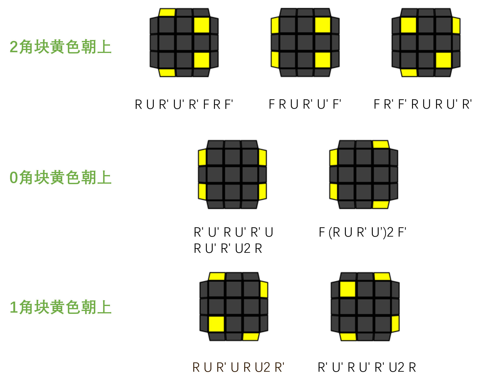
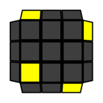
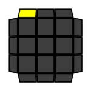
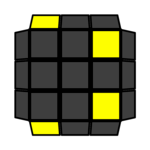
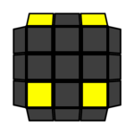
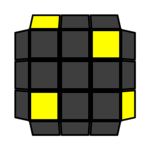
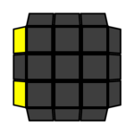
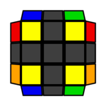
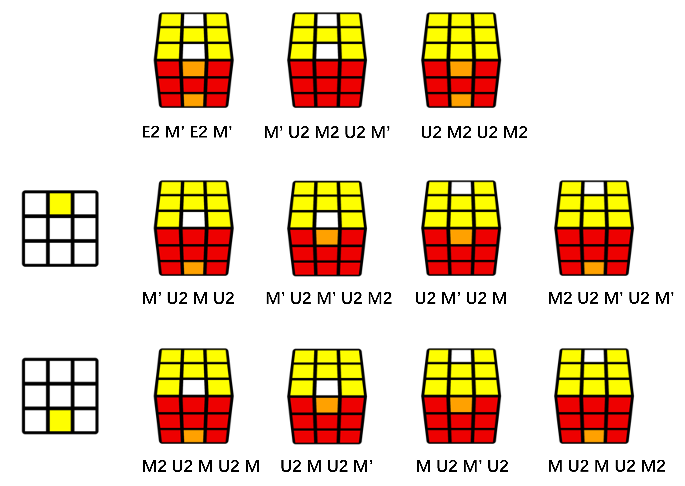

简介
欢迎阅读这份桥式复原法入门教程！本教程假设读者此前没有了解过魔方有关的知识，另外也适合有一定基础（层先法、CFOP等方法）的玩家阅读。
桥式解法蕴含着一些独特的复原思路，因此即便你最终没有选择桥式解法作为主力解法，桥式有关的知识仍然会对提升你的解法有益处。
桥式解法
在一切开始之前，先简单认识一下桥式解法吧：
桥式（Roux）解法是三阶魔方的一种复原方法，以其发明者Gilles Roux（法国）的名字命名。2003年夏，Roux在学习CFOP解法时被其繁杂的公式困扰，决心发明一种简单高效的解法。经Roux本人和其他众多魔方爱好者的完善，桥式解法逐渐发展为一种成熟的速拧方法。它的特点是还原步数少、转体少、公式少，并在最后一步（后六棱）中大量使用 M 层转动，在单手项目上有独特的优势。
所谓M层转动，指的是将左、右两面中间的夹层单独转动：
桥式解法分为左桥（FB, First Block）、右桥（SB, Second Block）、四角归位(CMLL)、后六棱(LSE, Last Six Edges)4个步骤。
左桥
复原一个1×2×3的块（左桥）。
右桥
复原另一个1×2×3的块（右桥），位置与已有的左桥相对。
CMLL
复原顶层的四个角块的朝向和相对位置。
后六棱
复原最后六个棱块，即位于顶层的左右两侧各一个棱块，以及M层的四个棱块。
如何使用本教程
虚拟魔方
本教程提供了大量的虚拟魔方演示，可以拖动以改变朝向；对于带有转动的演示，点击它们以执行转动（注意在第一次点击之前，它们显示的状态有可能是最终状态）。虚拟魔方的下方还有单步执行、恢复等选项，你可以自行探索。
建议使用电脑端阅读本教程，以更方便地观察这些虚拟魔方。如果使用手机端，尽量不要拖动虚拟魔方，因为拖动操作并不稳定；一些图片在竖屏下可能会变窄，可将手机切换为横屏阅读。
复原步骤的阅读
本教程采用总分的结构，共有三章（不包括记号）。每一章的开头会介绍对应步骤的复原目标，并给出类似于纸质公式书的简略复原指引。每章下的小节则会详尽介绍对应步骤的做法。对于有一定基础或者理解能力强的读者，你可以只阅读章前的内容，而跳过小节中的详尽介绍。如果你已经完整学习了一遍，而忘记了某个情形的做法，有时也能通过章节开头的复原指引快速查阅。
桥式复原法中，每个阶段都有很多种可能的情形(case)，因此会涉及到分类讨论。在阅读每个小节时，你可以先像查字典一样，观察你手中的魔方对应的情形，确定应当按照教程中的哪一种方式复原，而不必一开始就逐句阅读。
第一次阅读时，你可以在完成一个步骤的复原后，直接跳到下个步骤，直至还原好你手中的魔方。经过多次的重复打乱和复原，你将逐渐学会应对每一种可能的情形。
如果某种情形难以通过打乱遇到，你可以使用反向转动的方法得到这一情形。
入门
首先简单介绍魔方的基本知识。
本节的内容可能非常简单。如果对魔方已经熟悉，你可以直接跳到记号一节。
基础知识
你现在手中拿着的魔方被称为三阶魔方，因为它呈立方体形状，且每一条棱上包含三个块。三阶魔方的块分为三类：
- 角块
- 角块拥有3个面，出现在立方体的每个顶点上，总共有8个。
- 无论怎样打乱魔方，角块的三个面之间的相对位置不会变化。
- 棱块
- 棱块拥有2个面，出现在立方体的每条棱的中央，总共有12个。
- 无论怎样打乱魔方，不同类型的块不会相互转换。例如，角块不可能移动到棱块的位置上去。
- 中心块
- 中心块拥有1个面，出现在立方体的每个面的中央，总共有6个。
- 无论如何打乱魔方，中心块的相对位置不会变化。例如，在标准配色下，白色中心块的对面一定是黄色中心块。
这三类块构成了立方体表面上所有的26个块。
标准配色
请检查你手中的魔方是否是标准配色，这是本教程能够顺利指导复原的前提。方法是观察各个面上的中心块，无论魔方是否为打乱状态。原则如下：
-
白对黄（白色中心块的对面是黄色中心块）、蓝对绿、橙对红。
-
如果面朝黄、绿、红的三个中心块，它们将依次按顺时针排列。
尝试还原
你可以尝试自行复原魔方的一面：
或者更进一步，一层：
记号
本节的内容多且重要，但这不意味着你需要一次性记住。后续章节中出现记号时，往往伴随着虚拟魔方的转动演示，你可以将动画与记号对应起来。对于桥式解法，最重要的几个转动记号为U、F、R、M与r。
位置
一般来说，我们在复原中会选一个面对准自己。一旦视野中面积最大的面（称为“前“面）选定，并且魔方姿态正直，那么魔方的朝向也就确定了。视野中至多只能同时看见“前“面周围的两个面。
按照视野中各个面的不同朝向，采用以下记号来标记它们：
顶，或U（Up），有时也称为上前，或F（Front）右，或R（Right）底，或D（Down，与U相对）左，或L（Left，与R相对）后，或B（Back，与F相对）
在下图中的朝向中，中心块黄、红、绿、白、蓝、橙所对应的面，与上面介绍的各个朝向依次对应。注意在本节中，请勿改变所有虚拟魔方的初始朝向，否则记号无法与演示对应。
由于棱块存在于两个面的交界处，因此使用两个面的记号也可以唯一表示棱块的位置。UR位指的是U面与R面交界的位置，在下图中为橙绿棱块。这里只表示块的位置而不表示朝向，因此字母之间的顺序是随意的。
处于同一位置的棱块，有两种不同的朝向可能。
角块的位置也可同理表示。下图中的黄红绿棱块位于URF位。
单层转动
试着转动魔方。魔方的所有6个面都可以转动，且每次转动都有一个面唯一对应。因此，转动记号可以沿用上节中的关于面的位置记号。
根据效果的不同，用三种记号来表示同一个面的转动：
- 大写字母 （顺时针转动90°）
- 大写字母 +
'（逆时针转动90°） - 大写字母 +
2（旋转180°）
例如，U不仅表示顶面，也表示顶面按照顺时针旋转90°。U'则表示将顶面按照逆时针旋转90°。U2和U'2的效果相同，都是将顶面旋转180°。
使用下面的动画，点击中间的运行按键来熟悉每个转动记号，并且同时试着与你手中魔方的转动联系起来。
U 转动
L 转动
F 转动
R 转动
B 转动
D 转动
转动序列
形如R U R' U'的转动记号组合，代表依次进行对应的转动操作。
(R U R' U')2则代表将括号中的转动序列执行2次。它等价于(R U R' U') (R U R' U')或是R U R' U' R U R' U'。
括号有时是为了方便记忆而设置的。
逆转动
R U R' U'的反向操作，对应的转动是U R U' R'。逆转动是这样得到的：先将R U R' U'的记号倒过来，得到U' R' U R，再改变每个记号的顺逆时针。当然，如果是U2改变为U'2，可以不改变写法。
本教程中的演示，通常从一个特定的情形(case)出发，通过一系列转动完成复原。你可以从已复原的状态出发，通过对教程提供的解法进行反向操作，得到这个特定情形。
B层、D层和L层的转动方向也许有些特殊。注意所谓的顺逆时针，都是假定直接面向这个面的来观察的，而不是从你的视角的位置。例如，D’表示你从魔方底部向上看时，底层向逆时针旋转90°。U’和D’都代表逆时针旋转，但从你的角度来看，它们的转动方向是相反的。
注意转动记号取决于魔方当前的朝向，而不是对应中心块的颜色。如果红色中心块不在F面（前面），那么此时转动红色中心块所在面的记号就不再是
F，而是由视野中它所在的面的朝向决定。它若在左边，那转动记号就是L。
应当逐步熟悉所有6类转动的手法，而不要依赖于先把要转动的面移动到自己面前，再去转这个面。即使这个面在视野之外（如转动
B’），也不要改变魔方的朝向。
转体
转体就是魔方的整体转动。魔方可以通过三个基本的维度进行转体，因此使用所围绕的坐标轴来表示不同的转体。注意下面的y与z转动，与右手坐标系的y、z轴是相反的。
更简单的记忆方法是记住对应的面： x, y和 z 分别对应 R, U和 F 的方向。 例如，转体x' 和转动 R'类似，但是是所有的层都做相应转动，而不是只有R层转动。
x 转体
y 转体
z 转体
桥式解法无需转体。为了便于入门，本教程的最后一个步骤将用到一些x转体。在进阶阶段，它们可以被无需转体的方法替代。
其他有用的记号
使用转动和转体记号的组合，就足以表示所有的转动了。但也有一些组合转动，在桥式解法中会非常有用：M、r。E、S在特定情形下也许也会用到。
M转动
M层指的是L、R层中间的夹层，而M指的是将M层转动，而保持两边的层不动。M层转动非常能代表桥式解法的特色。M层的顺逆时针的方向判断与L一致，较为反直觉。你也可以这样记忆：M字母中间的“V”指向下，这就是M转动的顺时针方向。
应当逐步练习一次性完成对
M'或M的转动，不能用两次转动来代替。你可以使用左手无名指，从魔方下方推动M'。转动M也可通过左手无名指从魔方下方反推来完成。如果觉得比较困难，可以先用其他手指，从魔方上方将M层“压下去”。（为了M层转动的顺畅，建议使用一个好一些的魔方！）
r转动
r转动指的是在转动R层时，连带将M层转动。因此其顺逆时针的方向判断与R一致，但采用小写表示双层转动。注意r等价于转动L和转体x的叠加，不要混淆r与L。
Rw记号在三阶魔方中等价于r。该记号通常用于高阶，其中的w代表的是“wide“（宽）。如果在其他教程中遇到，知道它们是一回事就好。
不确定的转动
在本教程中，有时只能确定旋转哪一层，而具体旋转的效果要视情况而定。为了解决这类情况下表示的困难，约定采用“字母+x“来表示这类转动的集合。例如，用Ux来表示U层的所有可能转动，它可能是U、U2、U’，甚至U0（不转动）。同理有Rx、Mx、rx等。
冷门记号
E转动
E层指的是U、D层中间的夹层，对应的转动为E转动，其顺时针转动方向与U一致（也和字母“E”的开口方向一致）。在桥式解法的最后一步中，有的玩家会使用双手E转动，处理一种称为“四心换”的情形。
S转动
S层指的是F、B层中间的夹层，对应的转动为S转动，其顺时针转动方向与F一致。在单手处理“四心换”情形时，有的玩家会使用S转动代替E转动。
两桥
“两桥”指的是左桥和右桥。“桥”指的是一个1×2×3的块，按照摆放的位置区分为左桥和右桥，位置相对。复原顺序是先左桥，后右桥。
以下是一个已经复原好的左右桥：
如复原步骤的阅读所述，每章开头的部分会给出简略复原指引，以下部分大致了解即可。你也可以跳过，在后续的章节中再详细学习。
复原步骤
左右桥的复原过程非常自由。一种可行的复原步骤如下：

每个桥的复原都是先完成底层的棱块，再完成两侧的棱块与角块的组合（棱角对）。
棱角对复原
棱角对的复原是两桥部分的重点，其复原过程也较为自由。一种可行的复原过程如下：

仅作为示意，实际的情形不必与上述图片完全一致。
左桥棱角对的复原只会比右桥的更简单。对于右桥的另一棱角对，你可以通过镜像的操作来复原。
两类基本操作
在完成右桥时，两类基本操作R Ux R'与R' Ux R会非常有用：它们涉及与右桥空缺棱角对的位置有关的块的操作。可以将空缺棱角对的位置中的块移出，或是将位于顶层的棱角对放在空缺棱角对的位置中，完成归位。
它们也可以对UFR位或UBR位的角块做翻转，调整角块的朝向。通过这种方法，可以使待复原角块的白色面不朝上。例如：

左右桥的具体内容将在以下两节介绍。若上面的简略复原指引已经足以让你理解并复原左右桥，你也可以跳过后面的详细介绍。
左桥
目标
左桥是一个1×2×3的块，其中2×3的面的颜色就称为这个桥的颜色，1×3的面的颜色称为这个桥的底的颜色。
左桥作为一个步骤，指的是把魔方左侧的1×2×3的块复原，作为桥式的第一步。左桥有24种可能的选择，但本教程将始终将白色底的蓝色桥作为待复原的左桥，并且后续的复原都以此为基础。
下面是一个白底蓝桥的形态，你可以拖动魔方以仔细观察。
你可以借鉴复原一层的思路来复原左桥，例如先组好一部分十字，再插入对应角块。但仍然推荐你通过下面的内容，理解构筑、插入棱角对的思想。这个思想也应用在右桥的复原中。我们只介绍最笨拙的左右桥复原方法。如果已经学会了如何通过组棱角对复原左桥和右桥，你可以大胆探索：是否能够走不一样的复原流程？是否可以用更少的步数完成同样的目标？
1 复原底棱
第一步是将蓝色中心块与蓝白棱块合并。合并后，蓝白棱块的蓝色面应当与蓝色中心块相邻，而白色面朝下。
首先调整中心块朝向。旋转魔方，使得蓝色中心块位于左面。相应地，绿色中心块会位于右面。
此后需要保持这样的朝向不变——始终让蓝色中心块位于左面，直到魔方完全复原。
只需调整蓝绿中心块的位置。在桥式的最后一步（后六棱）以前，其他中心块的位置不需要关心。
调整朝向后，将蓝色中心块与蓝白棱块合并。这步至多通过两次转动就能完成，以下是一些实例。
例1: 改变朝向
例2: D层转动
例3: 未归位，朝向错误
例4：归位，朝向错误
或：
(有很多可能的解法，请自行尝试。)
完成后，为了不改变蓝绿块的位置，此后我们不会轻易转动L层或D层。
2 复原一对棱角对
接下来要完成一个 1x2x2 方块。可以使用蓝红-白或蓝橙-白棱角对，与已有的部分组合起来。
以下是一个由蓝红-白棱角对组成的方块。
棱角对指的是一个棱块和一个复原状态下与之相邻的角块的组合。以下是一些已经组好的棱角对。
蓝红-白
蓝橙-白
蓝白-红
可以看出，位于蓝白桥两侧的棱角对，前面的棱角对的侧面颜色是红，而后面的棱角对对应橙。如果在复原过程中不清楚侧面的颜色，可以转动r层(rx)，将白色中心块与已复原的白底棱块对齐，再根据侧面的中心块颜色判断。
例如，根据中心块颜色可以看出，左桥为橙白桥时，前棱角对的侧面颜色是蓝。
如前面所述，白色中心块不需要始终与白底棱块对齐，因为它接下来可能随着r层和M层转动而不断移动。
为了复原蓝红-白棱角对，我们采用以下步骤：
2-1 棱块放至起始位
起始位指的是是DF位，用黑色标出。
这一步的目标是将蓝红棱块放在起始位，不关心其朝向。步骤如下：
通过Ux、Fx或Bx，将蓝红棱块放在M层。随后做rx，将棱块放入起始位。
如果棱块已经位于M层，显然不需要通过
Ux、Fx或Bx调整。Ux的说法包含了这个意思，因为Ux包含U0。随后的rx也同理。这种隐含的“如果已经完成，可直接跳过”的含义，在后面会遇到很多。
特例：棱块处于DR位
此时无法用上述流程解决，做R F即可。
2-2 调整角块色向
这一步的目标是调整蓝红白角块的位置。目标是将蓝红白角块放在顶层，并让白色面不朝上。
大多数情况下，通过Rx或Bx一步就能完成。
特例1：角块已经归位（LFD位）
此时，无论怎样移动都会影响之前棱块的位置。此时做r' F r。
特例2：角块位于LFU位且白色面朝上
此时，先转Ux将角块放在某个翻转位上。
翻转位指的是UFR位或UBR位，用黑色标出。
然后，作R或R'以翻转，将它放到另一个翻转位上，此时白色面便不在顶面上了。
或：
2-3 棱角对归位
这一步的目标是组好棱角对，并和已有的部分合并成方块。
首先做Ux，使白色面移到侧面（L面或R面），具体哪面视蓝红棱块的朝向而定。其次做rx或Rx，将棱角对正确合并。最后通常能通过一步F或F'完成归位。
特例：不能直接F归位的情形
3 复原另一棱角对
接下来将复原剩余一对棱角对，完成左桥构建。在这里，我们需要复原蓝橙-白棱角对。
复原第一对棱角对的经验，可以几乎原封不动地用到第二组棱角对的复原中，因为它们只是关于前后做了镜像。通过下面的例子，你会看到如何用相同的办法复原蓝橙-白棱角对。
3-1 棱块放至起始位
原本的DF位仍然作为起始位，不过这里选择了它的镜像位DB位。
3-2 调整角块色向
将蓝橙白角块放在顶层，并让白色面不朝上。仍然使用了“翻转位”的方法。
3-3 棱角对归位
组好棱角对并归位。Ux+rx/Rx +Bx'能够处理大部分情况，与组第一组棱角对时的不同在于，最后的Fx换成了Bx。
更多的情形请自行尝试，注意复原时不要破坏已有的方块。
不同的复原步骤
前面已经提到过，我们介绍的方法是非常死板的，实际上，桥式方法中的筑桥非常灵活，尤其是左桥，因此一定要多尝试，而不要拘泥于特定的复原步骤。下面介绍一些不同的思路。
左桥中的1x2x2 方块有前后两种选取方式。我们在复原第一个方块时，选择了位置靠前的方块，为此先复原了前棱角对（蓝红-白）。当然也可以先复原后棱角对，组好后面的方块。
一个1x2x2 方块有两组棱角对。我们先复原了蓝白棱块，再复原蓝红-白棱角对。如果先复原蓝红棱块，再复原相应的蓝白-红棱角对，当然也可行。但这样就提前选定了方块（假设不更改左桥的底色），在组第一个方块时，棱角对的选取只有一种。
更进一步，左桥不必一定按照“一个方块+一对棱角对”的顺序来复原。例如，“三三桥”将左桥分为两个1x1x3的条并分别还原。“S桥”先复原两侧的棱角对，再通过S层转动将中心块与蓝白棱块归位。
右桥
目标
右桥也是一个1×2×3的块，与左桥相同，而位置与左桥相对。其底色与左桥相同，桥色相反，因此需要完成一个白底绿色桥。
你可以通过下面的已经完成好的右桥，观察它与上节复原的左桥的联系。
1 复原底棱
第一步是将将绿色中心块与绿白棱块合并、归位，并且不能破坏已经做好的左桥。
如果绿白棱块已经和绿色中心块对齐，或绿白棱块在顶层且白色面朝上，通过 Ux Rx直接归位。
例1: 直接归位的情形
如果不能通过上面的方法归位，就将绿白棱块转动到M层，并使棱块的白色面朝上，然后再做上述操作。下面给出两个例子。
例2: 棱块在M层
转动rx或Mx即可。
例3：棱块不在M层
转动Rx Ux，将绿白棱块转动到M层；再做rx，使棱块的白色面朝上。
2 复原一对棱角对
接下来要完成右桥中的一个 1x2x2 方块。可以使用绿红-白或绿橙-白棱角对，与已有的部分组合起来。
我们选择复原由绿红-白棱角对组成的方块，如图所示。
我们介绍两类基本操作，以完成和右桥棱角对位置有关的块的处理：
基本操作一：R Ux R'
这里的Ux可以是U、U'或U2。作用是将F、R层交界位置的两个块（灰色）移动到顶层。相应地，它们的位置也会被原本在顶层的两个块（黑色）替代。
基本操作二：R' Ux R
与基本操作一类似，作用是将B、R层交界的两个块移动到顶层。
为了组好绿红-白棱角对并归位，我们采用以下步骤：
2-1 棱块放至起始位
这一步的目标是将绿红棱块放在起始位（DF位），不关心其朝向。和左桥相同，我们选择DF位作为起始位。
通过Ux将绿红棱块放在M层，然后做Mx，将棱块放入起始位。
特例：棱块在右桥的位置上
如果棱块位于RF位或RB位，使用上面介绍的基本操作，将棱块移动到顶层，此时便位于M层了。
对于RB位，选择基本操作二。（为什么？请回忆基本操作的功能）
在左桥中，我们曾能够用
Fx或Bx调整，将棱块移动到顶层。在右桥中不再适用。
2-2 调整角块色向
这一步的目标是调整绿红白角块的位置。目标是将绿红白角块放在顶层，并让白色面不朝上。
首先，将绿红白角块放在顶层。如果它不在顶层，那么一定在右桥位置上（RFD位或RBD位）。此时做一次基本操作即可。这里同样需要根据块的具体位置，以确定使用基本操作一还是二。在基本操作中，对Ux做适当的选择，可以避免做完后角块的白色面朝上的情况，从而一步到位。
同样的情形下，如果选择U'，将导致白色面朝上，需要额外做翻转。
如果绿红白角块已经在顶层，且白色面朝上，那么需要调整角块的朝向。首先，转Ux将角块放在某个“翻转位”（UFR位或UBR位，见左桥-调整角块色向的特例2）上。
如果在翻转位UFR位，做基本操作一中的R U' R'或R U2 R'。
如果在翻转位UBR位，做基本操作二中的R' U R或R' U2 R。
在左桥中，我们曾能够用一步
Rx完成角块翻转。在右桥中不再适用。
2-3 棱角对归位
这一步的目标是组好棱角对，并和已有的部分合并成方块。
首先做Ux，使白色面移到侧面（L面或R面），具体哪面视绿红棱块的朝向而定。其次做Mx，将棱角对正确合并。
在左桥中，我们曾用
rx或Rx，让角块移动。在右桥中，我们反过来让棱块移动，以迎合角块。
合并后有四种可能的情形。
例1 基本操作一
例2 双层转动的基本操作一
例3 转化
U2转化为例1。另有一种情形同理转化为例2，不再列举。
3 复原另一棱角对
接下来将复原剩余一对棱角对，完成右桥构建。在这里，我们需要复原绿橙-白棱角对。
和左桥一样，这步可以套用第一组棱角对的做法。
3-1 棱块放至起始位
将绿橙棱块放在起始位，即DF位。
3-2 调整角块色向
将绿橙白角块放在顶层，并让白色面不朝上。仍然使用了“翻转位”的方法。
与复原第一组棱角对不同的是，此时前棱角对已归位，那么应该避免选择基本操作一，因为它会破坏这组棱角对的位置。因此这时翻转位只能选择UBR位，并做基本操作二。同理，如果是先复原后面那组棱角对，那么要避免做基本操作二。
3-3 棱角对归位
组好棱角对并归位。
棱角对正确合并后，这里出现的情形和第一组棱角对归位中的例2互为镜像，因此解法也是镜像的：
r与r'对称，U与U'对称。
更多的情形请自行尝试。
顺带一提，在后续的“后六棱”步骤中，将要求顶层的中心块为黄色或白色。右桥复原的最后一次转动中，你可以自由选择转Rx还是rx，以归位最后一对棱角对，因此上述目标在右桥最后一步中就可完成，从而避免后续通过Mx再次调整。
CMLL
目标
这步要还原顶层的四个角块的朝向和相对位置，如图所示。CMLL的含义是：复原最后一层的角块，而不关心M层的情况(Corners (regardless of M slice) of Last Layer)。
完成后，顶层可以自由旋转，角块不必一定和左右桥对齐。
CMLL步骤中会引入一些公式（在本教程中，指的是4步以上的转动序列）。
你可以选择最少的记忆量（1条公式：公式〇），但会多很多转动步数，并且需要理解如何叠加公式。
你也可以记忆全部9条公式（公式一~三、进阶公式一~六），避免叠加造成多余步数。
在后面两节的介绍中，我们将主要介绍折中的方案（3条公式：公式一~三），并顺带提及前面两种方案。然而，当你对桥式复原法较为熟练之后，建议将9条公式全部掌握。
我们将CMLL分为以下两个步骤：
一. 复原四角色向
这步要将顶层的四个角块在顶层上的颜色还原正确，也就是黄色一致朝上。
叠加法
采用公式一、二的叠加法如下：（以下皆为俯视图）

公式法
直接复原的公式如下：
二. 复原四角相对位置
这步将彻底完成CMLL步骤，也就是将顶层的四个角块的相对位置也还原正确。
公式如下：

CMLL的两个步骤的具体内容将在以下两节介绍。
四角色向
这步要将顶层的四个角块在顶层上的颜色还原正确，也就是黄色一致朝上。
共有7种未还原的情形。根据顶层四角的位置上已还原的黄色面的数量，将其分为3类：
一个黄色面已还原
As

上图为As形态的俯视图，特点是3个未复原的黄色面都在顶层侧面的左边。换句话说，将角块逆时针旋转120°，可以把黄色面移动到顶层。通过Ux将已复原的黄色面放在俯视图的左上角位置，然后完成公式：
公式一 R' U' R U' R' U2 R
这个公式的组成为：(基本操作二) U' (基本操作二)。（见基本操作二）可以看出，它先将右桥的后棱角对移动到顶层，再换一种方式重新插入。
如果你只想为整个CMLL步骤记忆一条公式，那么记忆下面的公式：
公式〇 R' U L U' R U L'
S

S形态的特点是3个未复原的黄色面都在顶层侧面的右边。通过U转动将已复原的黄色面放在俯视图的左下角位置。
公式二 R U R' U R U2 R'
这个公式的组成为：(基本操作一) U (基本操作一)。（见基本操作一）它对右桥的前棱角对完成重新插入。
如果只使用公式〇解决S形态，将已复原的黄色面放在俯视图的左上角位置，再完成：
(公式〇) U' (公式〇)
叠加法
除As与S以外的所有形态，都能通过执行一次公式一转化为As或S形态，因此总能通过叠加前面的公式来解决: Ux (公式一) Ux (公式一/公式二)。Ux用于调整朝向。
当然也可以只使用公式〇解决。在上面的Ux (公式一) Ux (公式一/公式二)叠加方案中，将公式一替换为公式〇、公式二替换为(公式〇) U' (公式〇)即可。注意用于调整朝向的Ux会有一些变化。
两个黄色面已还原
恰好两个黄色面已还原的情形有3种。其叠加法如下：无论哪种情形，保证俯视图中左上角的角块是黄色朝上的:

然后使用公式一（或公式〇），就一定转为S形态，从而能够通过公式二（或叠加公式〇）解决。
T
T形态中，两个未还原的角块相邻，黄色面方向相对。

我们为叠加法给出一个具体例子。以T形态为例，首先保证俯视图中左上角的角块黄色朝上，上图已满足要求。
然后，执行公式一。调整朝向后再做公式二即可。
T形态的一步复原公式为：
进阶公式一 (R U R' U') (R' F R F')
U
U形态中，两个未还原的角块也相邻，但黄色面方向相同。

采用叠加法时，上图的朝向满足起手要求。
U形态的一步复原公式为：
进阶公式二 F (R U R' U') F'
注意这里改变了初始朝向，使得两个黄色面朝左。
L
L形态中，两个未还原的角块相对。

采用叠加法时，上图的朝向满足起手要求。
L形态的一步复原公式为：
进阶公式三 (F R' F' R) (U R U' R')
注意这里改变了初始朝向，使得俯视图中左下角的黄色面朝前。
零个黄色面已还原
没有任何黄色面已还原的情形有2种。其叠加法如下：无论哪种情形，保证俯视图中左侧的两个角块是黄色朝左的:

然后使用公式一（或公式〇），就一定转为As形态，从而能够再做一次公式一（或公式〇）解决。
H
H形态中，四个未还原黄色面朝向两个方向。

对于叠加法，首先保证俯视图中左上角的角块黄色朝上，上图已满足要求。
然后，执行两次公式一。这里，中途不需要转动U层调整朝向。
消步后即为H形态的一步复原公式：
进阶公式四 (R' U' R U') (R' U R U') R' U2 R
Pi
Pi形态中，四个未还原黄色面朝向三个方向。

采用叠加法时，上图的朝向满足起手要求。
Pi形态的一步复原公式为：
进阶公式五 F (R U R' U')2 F'
叠加法原理（选读）
所有的情形都能通过执行一次As的复原公式（公式一），转化为As或S，也就是恰有一个黄色面已还原的情形。但我们对初始的朝向做了要求，并不是随便做一次公式一就一定能转化。那么，为什么我们提供的朝向就能奏效呢？
以T形态为例。它属于两个黄色面已还原的情形，我们要求俯视图中左上角的角块黄色朝上，然后执行公式一，完成转化。
对于As形态，我们要求俯视图的左上角的角块黄色面已复原，然后执行公式一，完成复原。
比较这两个俯视图，可以发现除了左下角的角块黄色面都朝下外，其他三个角块的形态都不同。因此同样执行公式一后，也会有三个角块的形态不同。既然执行结束后，As形态的四个黄色面都复原，那么T形态一定转化为恰有一个黄色面已还原，即As或S。你可以对叠加法图中左边5个形态的朝向做验证，它们一定恰好有一个角块的形态与As相同。
As形态执行公式一后，不会改变左上角的角块的状态（但会改变位置）。因此T形态执行公式一后，左上角的角块的状态也不会改变，其状态与S形态的三个未复原的角块一致，因此推断出转化为S形态。同理，所有的两个黄色面已还原的情形，都将转化为S形态。
四角归位
这步将顶层的四个角块的相对位置也还原正确。
观察顶面的四个侧面，有两种可能的情况：
一侧的角块颜色相同

如图所示，一个侧面的角块颜色相同，其余三个侧面的颜色不同。这里画出的是橙色相同。
Ux将角块颜色相同的侧面转向左侧，然后完成公式：
公式三 (R U R' U') R' F (R2 U' R' U') (R U R' F')
如果你在上一节只记忆了公式〇（R' U L U' R U L'），并不打算记新的公式，那么Ux将角块颜色相同的侧面转向后侧，然后完成：
L F (公式〇) U' F' L'
每侧的角块颜色不同

如图所示，任何一侧的角块颜色都不同。此时每一侧都是等价的，因此无需做方向调整。
可以叠加公式三解决：执行一次公式三（或是L F (公式〇) U' F' L'），使之变为上一种情形。
一步复原公式为：
进阶公式六 F (R U' R' U') (R U R' F') (R U R' U') (R' F R F')
后六棱
目标
这步的目标是将剩下的6个棱块（以灰色标出）复原，从而复原整个魔方。后六棱又叫做LSE(Last Six Edges)、L6E。
与CMLL类似，我们将后六棱分为两个步骤：
一. 后六棱色向
这步(eo/4a)要将顶层和底层上剩余的块的色向还原正确，也就是白色和黄色一致朝上或朝下。下面是一个色向还原的例子。
色向复原流程
色向的复原流程如下：（图片作者：甘浩東/Anto Kam）
在这张图中，中心块的色向已经复原；红色棱块代表色向错误的棱块，即白色/黄色面不朝向上/下。

色向复原公式
色向直接复原的公式如下：（图片作者：Kian Mansour）
在这张图中，中心块的色向已经复原；紫色棱块代表色向错误的棱块。

无论采用哪一种学习路径，我们都建议结合色向转换原理来辅助理解。
二. 后六棱归位
这步要在色向还原的基础上，将剩下的6个棱块彻底复原，从而完成整个魔方的复原。可以细分为左右棱归位(ulur/4b)和后四棱(l4e/4c)。
左右棱归位步骤
先将左右面位于顶层的2个棱块复原。先将它们都移动到底层，再插入：
在这张图中，紫色代表要插入的两个棱块，即黄蓝黄绿棱块。

后四棱公式
复原M层的最后4个棱块：
后八类情形都属于三个棱块未复原（三棱换）的情形。仅通过观察U层和F层不足以确定其形态，还需要观察D层的形态（图片左侧）。
三棱换的公式不必全部记忆。初学时，利用x转体可以将它们归为两种情形，即顺时针和逆时针三棱换；进阶时，通过学习“4c入门观察法”（超出了本教程的范围），将可以预判4c的解法，而不需要做转体，也不需要对D层做额外观察。
如此就完成了整个魔方的复原。
后六棱的两个步骤的具体内容将在以下两节介绍。
后六棱色向
这一步骤是桥式解法中最为困难的部分，请合理利用虚拟魔方下方的双箭头以观察单步转动。如果你感觉理解起来很吃力，可以在学习完“箭头”情形后，直接阅读复原流程图：了解具体的流程之后，再结合基本操作三~六，理解色向转换原理的思想。
目标
这步要将顶层和底层上剩余的块的色向还原正确，主要解决的是剩下6个棱块的色向。这步又叫做EO (Edges Oriented)。
“色向”这个词在CMLL中已经提及过。所谓块的色向(orientation)，在这里指的是块沿着上下方向的朝向。例如，某个块含有黄色面，在其朝向正确时，黄色面是向上的。而在它色向正确时，黄色面不仅可以朝上，还可以朝下。
以下是一个色向还原正确的具体例子。你可以拖动魔方，查看底层的状态：
在下图中，色向错误的棱块数量为4。（注意底层有两个）
为了直观，我们只使用红色标出上下两层中，色向错误的棱块面的位置。它不一定代表真正的红色面。
中心块的色向通过一步Mx就能解决，我们先还原它们，再处理剩下6个棱块的色向。
在这里，黄色中心块在顶层并不比在底层更好。
下面的介绍中，通过Ux能够相互转换的情形视为同一种情形。
四个棱块色向错误
首先，介绍两类基本操作：
基本操作三： M' Ux Mx
这里，Ux被限制为U或U'，Mx也被限制为M'或M，因此共有4种组合。其作用是改变箭头一中标红位置的棱块的色向，例如：
或者：
等等。可以看到执行完基本操作三后，4个红色面都移向了侧面，意味着其对应棱块的色向已改变。剩余两个棱块虽然没有标出，但它们的移动效果和M0或M2是一样的，因此色向不会变化。
基本操作四： M Ux Mx
与基本操作三相比，其第一步换成了M，而Ux与Mx同样被限制为90°转动。其作用是改变箭头二中标红位置的棱块的色向，例如：
可见，基本操作三和基本操作四能够改变特定的四个棱块的色向：3个位于顶层，1个位于底层。
“3-1”(箭头)
箭头(Arrow)的顶层有3个色向错误的棱块，底层有1个。通过做Ux可调整其形态如下：
箭头一
箭头二
不管哪种箭头，上面的朝向使得4个色向错误的棱块分为两对：一对左右相对，一对上下相对。
箭头一-基本操作三
箭头二-基本操作四
“箭头”是最简单的情形。后续所有的情形，都将先转化为“箭头”情形，然后复原。
“2a-2”
2a-2情形的含义为：“2a“代表顶层有2个色向错误的棱块，并且位置相邻(adjacent)；”-2“代表底层有2个色向错误的棱块。后边情形的命名方式都与此类似。
和“箭头”相比，2a-2的顶层少了一个色向错误的棱块，而底层多了一个。
顶层上位于M层的两个棱块中，恰有一个色向错误。如果做M2，将改变M层的四个棱块的上下位置。这样，色向错误的棱块数不变（4个），而底层将恰有一个色向错误的棱块，因此转化为“箭头”情形。
进而可以得出一种可行的解法：
下面我们再引入两类基本操作，以完成上下两个棱块的单独互换，并且不改变所有棱块的色向。
基本操作五： M' U2 M
将M层与F层（前面）交界的两个棱块（UF位、DF位）位置互换。
可以发现,交换位置的两个棱块的色向都没有改变，即一个正确、一个错误。
基本操作六： M U2 M'
将M层与B层（后面）交界的两个棱块（UB位、DB位）位置互换。
因此，当两个互相交换的棱块有不同的色向时，这两类基本操作能将顶层色向错误的棱块数增加或减少一个，同时保证色向错误的棱块总数不变。
“2o-2”
2o-2情形下，“2o“代表顶层有2个色向错误的棱块，并且位置相对(opposite)；”-2“代表底层有2个色向错误的棱块。
与2a-2情形一样，2o-2中色向错误的棱块数也是4个。对于2a-2，我们使用M2让顶层和底层的四个棱块两两互换，从而将顶层色向错误的棱块数改变为3，转化为“箭头”。这里用同样的办法就不能奏效了。
对于2o-2情形，可以做基本操作五或六转换为箭头。下面的演示以基本操作六为例：在B面（后面）上，一个底层色向错误的棱块与一个顶层色向正确的棱块交换，便转化为“箭头”。
一种可行的解法如下：
“4-0”
4-0情形下，顶层有4个色向错误的棱块，而底层没有。
可以想象，M2就能将4-0转为2o-2的情形。因此将2o-2解法的第一步由M改为M'，就能解决这类情形。
两/六个棱块色向错误
色向转换原理
我们已经展示了恰有4个色向错误的棱块的情形，转化为“箭头”情形的办法，即通过基本操作五、六或M2来改变上下面中色向错误的棱块的分配。
对于色向错误的棱块数不为4的情形，其统一的复原步骤如下：
-
通过至多两次基本操作三、四，将色向错误的棱块总数转为4个。通过精心选择要执行的基本操作，魔方可以直接转为“箭头”情况。如果没能转为“箭头”，则使用基本操作五、六再做转换。
-
通过基本操作三或四，解决“箭头”情况，完成色向复原。
基本操作三或四能够同时改变4个棱块的色向。除非这四个位置恰好有两个色相错误的棱块，否则基本操作三、四一定会改变色向错误的棱块总数。例如，如果这四个位置有1个色向错误，那么执行完后这四个棱块变为3个色向错误，总数量加2。
共有5类情况，一一介绍：
“2a-0”
“2a”代表顶层色向错误的两个棱块位置相邻。
执行基本操作三如M' U M'后，色向正确的棱块总数增加2，转化为“箭头”情形。
“2o-0”
“2o”代表顶层色向错误的两个棱块位置相对。
可通过基本操作三如M' U M转换。
“0-2”
可通过基本操作三如M' U M'转换。
由于0-2与2o-0只差一步M2，也可以将2o-0解法的第一步由M'替换为M。
“1-1”
有两种情形。
以下朝向下，可执行基本操作四如M' U M转换：
另一种的转化方法类似（基本操作三，如M' U M）:
“4-2”
4-2的所有6个棱块的色向都错误。
无论是执行基本操作三还是基本操作四，都会导致顶层色向错误的棱块数量减3、底层减1，因此只能先转化为1-1情形，再进一步转化为“箭头”。以下解法首先做基本操作四M U M'。
另有一种简便解法：R U' r' U' M' U r U r。
复原流程图
直观的色向复原流程图（作者：甘浩東/Anto Kam）如下：
在这张图中，红色棱块代表色向错误的棱块。图中无法看到DB位置棱块的色向，但请记住：色向错误的棱块总数一定为偶数。因此从图中就能足够推断它的色向情况。
不要去硬记每种情形的完整转换公式。应当将复原流程与基本操作三~六的功能联系起来，理解基本操作三、四是如何改变色向错误的棱块总数，基本操作五、六是如何改变色向错误的棱块的分布的，如同我们在色向转换原理中所介绍的那样。
注意每次转换完成后，还需要通过Ux，调整为图中相应的朝向。
后六棱归位
目标
这步要在色向还原的基础上，将剩下的6个棱块彻底复原，从而完成整个魔方的复原。分为两个阶段：
先将左右面位于顶层的2个棱块复原，并将M层的中心块对齐，剩下最后M层的4个棱块。
再复原最后4个棱块。
1 左右棱
1-1 左右棱置底
为了复原左右面位于顶层的2个棱块(ULUR)，我们先将要归位的黄蓝、黄绿棱块都放到底层。
以下是一个具体例子。你可以拖动魔方，主要查看底层的状态：
还原方法如下：
如果恰好有一个黄蓝或黄绿棱块在顶层：
先Ux将该棱块放在M层，并且保证其下方不是黄蓝或黄绿棱块。再做基本操作五或六，完成上下棱块的交换，将其放在底层。
这个例子通过基本操作六，将黄绿棱块从UR位移到DB位。
如果黄蓝、黄绿棱块都在顶层：
通过Ux将其中一个棱块放在M层，再M2将其放在底层。这样，至多有一个棱块仍然留在顶层，转化为上一种情形。
这个例子将黄绿棱块移到DB位，然后再通过基本操作五，将黄蓝棱块从UR位移到DF位。
这样就将两个棱块都放在底层了，两个棱块谁在前并不重要，但色向必须正确。
1-2 左右棱归位
左右棱都放到底层后，做Ux调整顶层角块的姿态，然后做M2，将黄蓝、黄绿棱块分别与对应的角块合并。
最后做Ux Mx，将左右棱块与M层中心块彻底归位。
2 后四棱
这步完成最后4个棱块的复原（L4E）。
完成左右面的复原后，魔方的形态变得更加对称了。你可以自由地做一些x转体，也可以自由尝试一些M层操作与U2的组合。
下面介绍一些简单的4步操作，来完成魔方最终的复原。
三棱换
这种情况下，对齐中心块后，恰好有3个棱块未复原，而1个M层棱块已经复原。
首先做x转体，使复原的棱块位于DF位上。
下图中，我们将已复原的黄红棱块转到DF位上。
进一步观察：
如果UF位的棱块颜色与两侧中心块的颜色都相反，做U2 M U2 M'（即U2+ 基本操作六）。
如图，UF位的白红棱块，两侧的中心块分别为黄、橙，满足要求。
如果UF位的棱块颜色仅与前面中心块的颜色相反，做M U2 M' U2（即基本操作六+U2）。
你也可以尝试：如何不依赖转体，仅使用U2和M层操作的组合来复原。不转体的完整公式可参考后四棱公式。
对于后四棱，有经验的桥式玩家不会依赖公式复原，而会通过提前观察相应的块的变化，完成对整个后四棱步骤的预判。这些观察方法包括4c入门观察法、DFDB观察法、BU观察法等。
四心换
这种情况下，对齐中心块后，有四个面呈“H”型。做E2 M' E2 M'。
之所以笼统地称这类情况为“四心换”，是因为做
M2后，除了4个中心块外的所有块都已复原。
“H”
这种情况下，对齐中心块后，四个面已经复原，而剩余两个相对的面呈“H”型。将一个H型的面放在F面，做U2 M2 U2 M2。
至此，魔方的六面都已经复原，大功告成！
你可以反复练习，直到能够不依赖教程而独立复原。
关于本教程
作者
参考工作
本教程参考了许多工作：
非常感谢前辈们的付出。